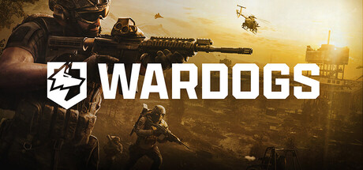
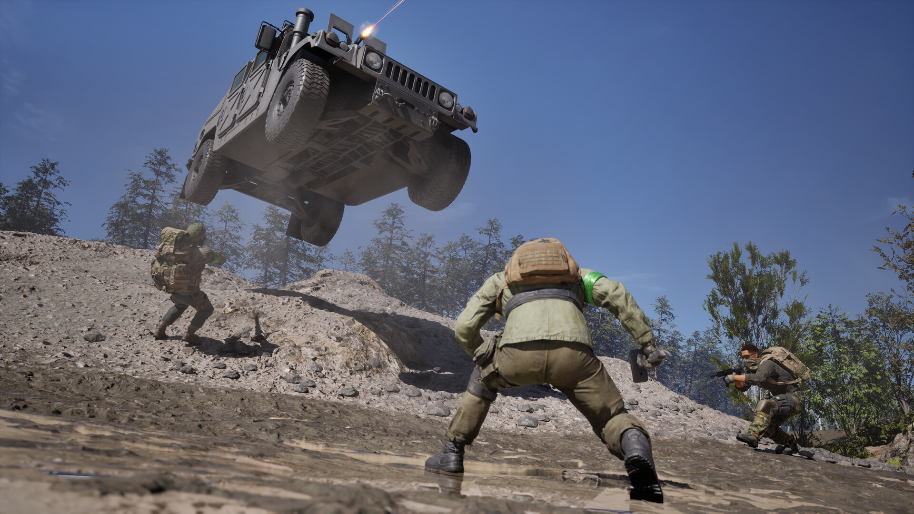

워독스 WARDOGS 앞서 해보기 동시접속자 34만, 스팀 평가는 복합적인 이유
딱 잘라 말씀드리면, 워독스(WARDOGS)는 지금 흥행과 잡음을 동시에 겪고 있는 게임입니다. 스팀 앞서 해보기로 나오자마자 최고 동시접속자 34만 명을 찍었는데, 정작 스팀 평가는 '복합적(Mixed)'으로 나왔거든요. 오늘은 이 게임이 왜 이렇게 뜨고 있는지, 그리고 왜 동시에 평가가 깎이고 있는지 두 갈래로 나눠서 짚어보겠습니다.
1. 워독스, 어떤 게임이고 언제 나왔나
개발사는 영국 더비에 있는 벌크헤드(BULKHEAD), 퍼블리셔는 팀17(Team17)입니다. 장르는 최대 100명이 세 개 진영으로 갈려 싸우는 대규모 밀리터리 전술 FPS인데요, 배경은 동유럽 산업지대입니다.
| 항목 | 내용 |
|---|---|
| 개발사 | 벌크헤드(BULKHEAD, 영국 더비) |
| 퍼블리셔 | 팀17(Team17) |
| 장르 | 최대 100인ㆍ3파전 밀리터리 전술 FPS |
| 배경 | 동유럽 산업지대 |
| 출시일(스팀 표기) | 2026년 9월 10일 |
| 출시일(인벤 보도) | 2026년 9월 11일 |
※ 출시일은 스팀 상점 페이지 자체 표기(9/10)와 인벤 보도 시점(9/11)이 하루 차이 납니다

보시는 이미지가 스팀 상점 페이지에 걸린 키비주얼인데요, 워독스 특유의 삭막한 산업지대 분위기가 바로 느껴지실 겁니다.
이미지 출처: Steam 공식 상점 페이지 · 네이버 본문엔 받아서 재업로드 권장
출시일 표기가 좀 재밌는데요, 스팀 상점 페이지 자체는 '10 Sep, 2026'(9월 10일)으로 적혀 있고, 인벤 보도(2026-09-11 07:00 게재)는 '9월 11일 출시'로 소개했습니다. 직접 스팀 페이지에 들어가 보시면 이 하루 차이를 바로 확인하실 수 있으니, 어느 쪽이 맞나 헷갈리지 않으셔도 됩니다.
가격이나 에디션 구성은 앞서 '워독스 스팀 예약 구매 시작, 사전예약과는 다릅니다' 글에서 이미 정리해둔 게 있어서, 이번 글에선 다루지 않고 출시 이후 흥행ㆍ평가 얘기에만 집중하겠습니다.
2. 동시접속 34만, 뭐가 그렇게 몰렸나
인벤 보도(2026-09-11 17:50 게재)에 따르면 워독스는 앞서 해보기 출시 직후 최고 동시접속자 34만 명을 찍었습니다. 같은 기사는 지금도 31만 명 안팎의 이용자가 게임을 즐기고 있다는 설명도 함께 전했는데요, 반짝 흥행이 아니라 이용자층이 꽤 두텁게 남아 있다는 뜻으로 읽힙니다.

보시면 100명이 한 맵 안에서 동시에 얽히는 대규모 전투가 어떤 그림인지 감이 오실 거예요.
이미지 출처: Steam 공식 상점 페이지 · 네이버 본문엔 받아서 재업로드 권장
왜 이렇게 몰렸는지는 시스템을 보면 짐작이 갑니다. 워독스는 최대 100명이 세 개 진영으로 갈려 컨트롤 존을 두고 싸우는 대규모 3파전 밀리터리 FPS인데요, 맵 자체가 파괴 가능해서 전투 지형이 계속 바뀝니다. 스팀 상점 소개를 보면 로켓 발사기로 아파트를 무너뜨리거나, 중전차로 마을을 밀고 지나갈 수도 있다고 하더라고요. 시작할 때 초기 자금 10,000달러를 들고 무기ㆍ장비ㆍ차량을 사서 꾸리고, 부상당한 동료를 소생시키거나, 수송하거나, 목표 지점을 점령하는 팀플레이로 자금을 더 벌어들이는 구조예요.
스팀 상점 페이지에 적힌 설명을 보면 시스템이 좀 더 촘촘한데요, 거점을 뺏고 지키는 제어 구역(Control Zone) 점령전이 게임 모드의 뼈대이고, 그 판에서 번 자금이 매치가 끝나도 사라지지 않고 다음 판까지 이어서 쌓이는 구조예요. 요새화 거점을 짓고 엄폐물을 세우는 건설과, 상대가 그걸 다시 부수는 파괴가 한 세트로 맞물려 돌아간다는 점도 특징이고요. 여기에 인벤 보도(2026-09-11 07:00 게재)를 보면, 전장에 들어갈 때 보병으로 뛸지 차량 같은 탑승 장비를 골라 움직일지 직접 정할 수 있고, 3파전으로 진행되다 보니 기존 대규모 전장에서는 보기 힘들던 교전 양상이 나온다고 소개했더라고요. 이 여러 특징이 한꺼번에 맞물리다 보니, 단순히 총싸움에서 이기는 것만이 아니라 거점을 어떻게 지키고 다음 판 자금을 어떻게 굴릴지까지 고민하게 되는 게 워독스만의 재미 포인트로 보입니다.
100인 3파전이라는 판 자체가 흔치 않은 데다, 초기 자금으로 장비를 골라 사는 시스템이 밀리터리 FPS치고는 신선하다는 반응이 뜨겁게 반영된 결과로 보입니다.
3. 근데 스팀 평가는 복합적, 왜 그럴까
흥행만 보면 성공(?)인데, 스팀 유저 평가는 그만큼 좋지 않았습니다. 인벤 보도(2026-09-11 17:50) 기준 워독스 추천 비율은 62%로 '복합적(Mixed)' 등급이었는데요, 오늘(9월 12일) 제가 직접 스팀 페이지에 들어가서 확인해보니 추천 비율이 77%, 등급도 '대체로 긍정적(Mostly Positive)'까지 올라와 있더라고요. 리뷰 개수는 18,020개였습니다.
| 시점 | 추천 비율 | 등급 |
|---|---|---|
| 기사 시점(2026-09-11 17:50) | 62% | 복합적(Mixed) |
| 확인 시점(2026-09-12) | 77% | 대체로 긍정적(Mostly Positive) |
※ 추천 비율은 기사 게재 시점(2026-09-11 17:50)과 직접 확인 시점(2026-09-12) 기준이며, 이후로도 계속 바뀔 수 있는 값입니다
지금 보시는 자리에 리뷰 요약 화면을 넣으시면, 숫자가 눈에 바로 들어와서 좋아요.
추천 비율은 이렇게 시시각각 바뀌는 값이다 보니, 이 글을 읽으시는 시점엔 또 달라져 있을 수 있습니다. 참고차 스팀 리뷰 등급 구간도 같이 적어둘게요.
| 등급 | 추천 비율 구간 |
|---|---|
| 복합적(Mixed) | 40~69% |
| 대체로 긍정적(Mostly Positive) | 70~79% |
※ 스팀 리뷰 등급 구간(참고용, 2026-09-12 기준 공개된 구간표)
4. 평가가 갈린 이유, 인벤은 이렇게 짚었다
평가가 갈린 이유에 대해 인벤은 '게임 자체의 재미보다는 서버 문제로 인한 불만이 크다'는 취지로 분석했습니다. 기사가 서버 문제의 구체적인 증상까지 짚지는 않았는데요, 대신 '서버 문제가 해결된다면 좀 더 좋은 평가를 기대해볼 수 있을 것 같다'는 전망으로 기사를 마무리했습니다.
다만 이건 어디까지나 인벤의 분석이자 전망이고, 서버 문제가 실제로 해결됐는지는 따로 확인된 바가 없습니다. 위에서 본 것처럼 확인 시점 평가가 62%에서 77%로 올라와 있긴 한데, 이게 서버 문제 해결 때문인지 다른 이유인지는 딱 잘라 말씀드리기 어렵네요.
자주 묻는 질문
Q. 동시접속자 34만 명은 스팀 공식 집계인가요?
A. 아닙니다. 인벤 보도(2026-09-11 17:50)에 나온 수치고, 스팀 자체 공식 발표나 SteamDB 같은 제3자 집계는 아닙니다. 같은 기사가 지금도 31만 명 안팎의 이용자가 게임을 즐기고 있다는 설명도 같이 전했어요.
Q. 인벤 기사가 두 개(320695·320743) 나오던데, 뭐가 다른가요?
A. 320695는 9월 11일 오전 7시에 나온 출시 예고성 소식이고, 320743은 같은 날 오후 5시 50분에 나온 후속 기사로 동시접속자ㆍ스팀 평가 수치까지 담고 있습니다. 이 글은 수치가 실린 320743 기준으로 정리했고, 게임 소개 부분은 두 기사를 같이 참고했습니다.
참고로 대규모 전장 밀리터리 FPS를 좋아하시지만 서버가 확실히 안정화될 때까지는 좀 더 지켜보고 싶으신 분이라면 지금 당장보다는 몇 주 뒤 평가 추이를 보고 들어오시는 쪽을 권해드리고, 반대로 34만 명이 몰린 흥행 초입 분위기를 지금 바로 즐기고 싶으신 분이라면 바로 합류하셔도 좋을 것 같습니다.